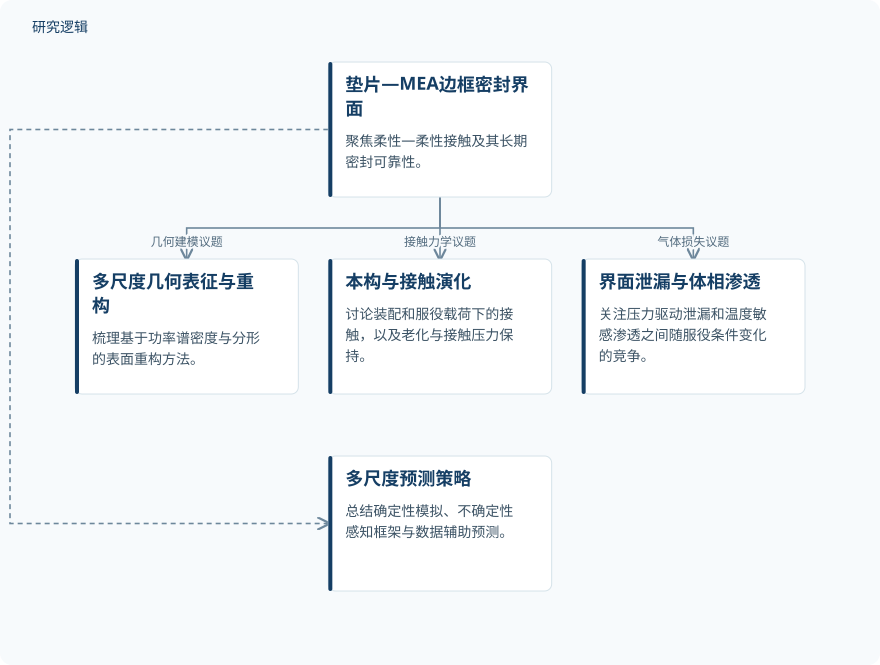

摘要解读
质子交换膜燃料电池垫片—膜电极组件边框界面多尺度泄漏建模：简评
Multiscale Leakage Modeling of PEMFC Gasket–MEA Frame Interfaces: A Mini-Review
解读更新 2026-11-10 17:11 · 依据公开摘要整理，未核验全文细节
重载应用中的质子交换膜燃料电池，密封可靠性不能只看初始装配状态。这篇微综述将界面接触演化与长期气体损失联系起来，为理解密封失效机理及其预测方法提供了阅读线索。
文章目录
密封评价为何要超越初始装配
面向重载应用的耐久性要求，质子交换膜燃料电池（PEMFC）的密封评价需要关注服役过程。本文聚焦垫片与膜电极组件（MEA）边框之间的密封界面，尤其强调柔性—柔性接触：需要理解的不只是装配时如何接触，还有接触状态与气体损失如何长期演变。
从表面重构梳理到多尺度预测
这是一篇微综述，而非摘要中报告了单项新实验的研究。作者梳理多尺度几何表征与重构、装配和服役载荷下的本构及接触演化、界面泄漏与材料体相渗透的竞争，以及从确定性模拟向考虑不确定性和数据辅助框架发展的预测策略。
具体方法涵盖基于功率谱密度（PSD）与分形的表面重构，以及描述弹性体老化和接触压力保持的黏超弹性、化学—热—力学模型。输运建模部分涉及滑移流与克努森尺度效应，同时总结流固耦合、随机公差分析和代理模型辅助预测的进展。
依据摘要整理的密封界面建模综述框架


展示摘要明确列出的综述对象与主要议题，仅为内容组织示意，不表示论文原图、实验流程或已验证的模型耦合关系。
下载 SVG图示关系说明
实线表示相邻阶段的信息流，虚线表示跨阶段联系或反馈。
垫片—MEA边框密封界面 → 多尺度几何表征与重构：几何建模议题；垫片—MEA边框密封界面 → 本构与接触演化：接触力学议题；垫片—MEA边框密封界面 → 界面泄漏与体相渗透：气体损失议题；垫片—MEA边框密封界面 → 多尺度预测策略：预测方法议题
气体损失取决于泄漏与渗透的竞争
摘要强调的核心认识是：气体损失不能仅用界面泄漏解释。压力驱动的界面泄漏与温度敏感的材料体相渗透之间，存在随服役条件变化的主导机制转换。因而，讨论密封性能时，需要区分气体沿界面逸出与穿过材料本体这两类过程。
综述同时将弹性体老化、接触压力保持与接触演化纳入讨论，并总结了不确定性感知和数据辅助预测的发展。不过，摘要没有报告统一的定量提升，也不能据此认定某类模型已在所有工况下优于其他方法。
摘要尚不能确定验证范围与适用边界
仅凭当前摘要，无法判断纳入文献的数量、具体材料与样本构成、工况覆盖范围、模型间的比较条件，以及实验验证和预测误差的具体水平。这些属于摘要未提供的信息，并不表示论文没有讨论或相关研究没有开展。摘要也不足以确定两类气体损失机制转换的具体边界。
阅读启发：预测维护之前先厘清物理与验证
阅读启发：可重点关注全文如何连接表面几何、接触演化与气体输运，以及如何处理公差和服役条件的不确定性。对于智能运维，作者将物理信息机器学习与多尺度泄漏预测的结合列为未来需求；其用于电堆健康状态评估和预测维护，仍需进一步关注全生命周期建模、原位验证与基准数据集，不能将这一方向理解为已经验证的应用效果。
以上为本站阅读启发与建议，不是论文已验证的结论。